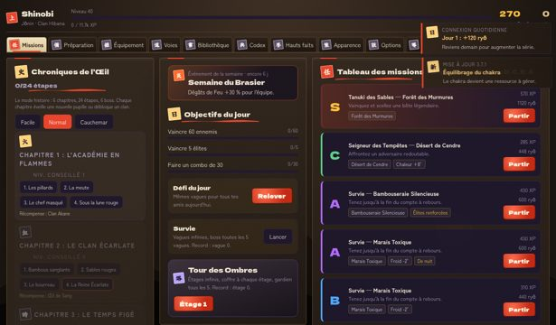
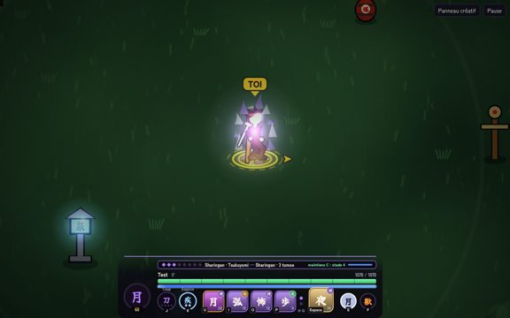
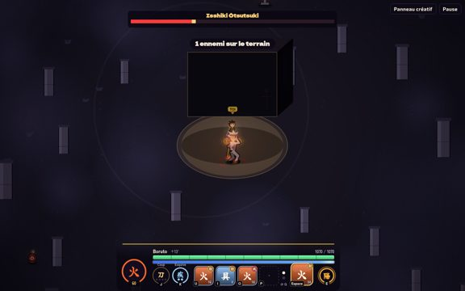
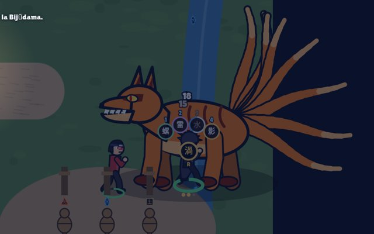

Shinobi 1 — Éternel
Le jeu d’origine : clans, bêtes à queues, pupilles, monde ouvert vivant, constellations de compétences et maîtres.
JOUER
Shinobi 2
Combats plus tactiques : signes des mains, auras de mode, Edo Tensei jouable, substitution par prédiction, mode créatif repensé.
JOUER
Shinobi Next Generation
Le parcours principal : mode Carrière de l’Académie au Sommet des Kage, ère Boruto (Karma, Baryon, Jōgan), boss Jigen, Akatsuki, monde 10× plus grand.
JOUER
Two Blue Vortex
Modes à étages jusqu’au Susanoo parfait, arbre-constellation, 328 variantes de techniques, IA plus rusée, carte en zones, Créatif et Chibaku Tensei.
JOUER